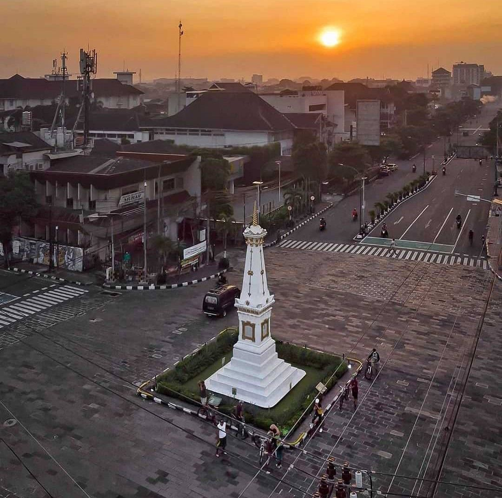

Tugu Yogyakarta
Biasanya Tugu atau monumen dijadikan simbol suatu daerah sebagai ciri khas sebuah daerah. Begitu juga dengan Tugu Jogja yang merupakan salah satu ikon utama Yogyakarta. Tugu Jogja ini berada tepat di tengah perempatan antara jl. Mangkubumi, jl. Jendral Sudirman, Jl. A.M Sangaji, dan Jl. Dipenogoro. Dengan berbagai sejarah yang melatarbelakanginya, Tugu Jogja juga menjadi ikon sejarah bagi kota Jogja.
Tugu yang dibangun pada tahun 1755 oleh Hamengkubuwono I, pendiri Kraton Yogyakarta, mempunyai nilai simbolis dan merupakan garis yang bersifat magis yang menghubungkan laut selatan, Kraton Jogja, dan Gunung Merapi. Konon Sultan pada saat melakukan meditasi menjadikan tugu ini sebagai patokan arah menghadap Gunung Merapi.
Pada saat awal berdirinya, bangunan ini secara tegas menggambarkan Manunggaling Kawula Gusti, semangat persatuan rakyat dan penguasa untuk melawan penjajahan. Semangat persatuan atau yang disebut golong gilig itu tergambar jelas pada bangunan tugu, tiangnya berbentuk gilig (silinder) dan puncaknya berbentuk golong (bulat), hingga akhirnya dinamakan Tugu Golong-Gilig.Keberadaan Tugu ini juga sebagai patokan arah ketika Sri Sultan Hamengku Buwono I pada waktu itu melakukan meditasi, yang menghadap puncak gunung Merapi. Bangunan Tugu Jogja saat awal dibangun berbentuk tiang silinder yang mengerucut ke atas, sementara bagian dasarnya berupa pagar yang melingkar, sedangkan bagian puncaknya berbentuk bulat. Ketinggian bangunan tugu golong gilig ini pada awalnya mencapai 25 meter.